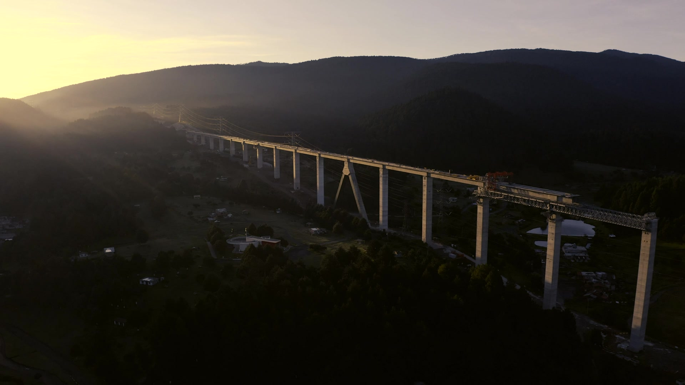

Beyond
boundaries.
A distinct corporate direction built around scale, confidence and clear navigation. A cinematic opening introduces the EPC business; a spacious editorial layout helps visitors understand the company, capabilities and international experience.

New live-action 1080p stock film of bridge construction. Not presented as AIL footage.
A genuinely different navigation direction
The conventional horizontal navigation bar is replaced by three distinct elements: a slim desktop side rail, an original-colour logo panel and a blue Explore control. The full-screen navigation index uses large numbered links, direct sector links and a contextual image that changes with hover or keyboard focus. On mobile, the rail disappears and the menu becomes a readable full-screen list.
Option 03 versus Option 04
| Element | Option 03 / World Ahead | Option 04 / Beyond Boundaries |
|---|---|---|
| Header | Floating light navigation bar with visible primary tabs | Separate logo panel, slim desktop rail and minimal Explore control |
| Menu | Hover expertise dropdown and separate drawer | Full-screen numbered index, direct sublinks and changing image panel |
| Hero | Construction cranes, sans-serif typography and grid details | Sunset bridge aerial, editorial typography, rotating film control and a larger sense of space |
| Sectors | Tabbed image stage | Horizontal photographic gallery with scroll snapping and arrows |
| Locations | Flat world map with pins and filters | Rotatable geographic globe with region selector and country console |
| Project story | Compact asymmetric image mosaic | Staggered tall photography and short editorial statements |
| Overall impression | Technical, animated and immersive | Confident, cinematic and editorial |
Brand continuity
#163C63AIL bright blue
#0078C7Light blue
#DEEEF8Cinematic navy
#0B2848
The original AIL logo is unchanged and sits on a light panel. The side-rail letter A is a navigation motif, not a replacement logo.
Motion and interaction
Headline entry animation, live-action film, a rotating Watch film control, scroll reveals, once-only number counters, image zooms, a selectable EPC process and a rotating globe create a continuous visual story. The hero and globe have pause controls. A global Pause animations control and reduced-motion support are included.
The counters show 1996 (establishment year), five displayed sectors and three EPC disciplines. No project totals, revenue, country totals or delivery outcomes have been invented.
A different location experience
The globe uses geographic land data rather than an abstract decorative sphere. Visitors can drag it, pause automatic rotation, select Africa, South Asia or Southeast Asia, and select a country. Country selection rotates the globe towards that longitude and updates the adjacent project example. Keyboard-accessible country controls provide the same information without dragging.
Seven selected country examples come from the original AIL homepage. They do not represent a complete footprint. Pins use approximate country centres, not office or project coordinates. Scope, dates, status and outcomes require company approval.
Visual quality and provenance
The new 1080p, 15-second bridge film and high-resolution bridge and team images are embedded in the download. Five sector photos illustrate relevant infrastructure. All stock imagery is labelled as illustrative; it is not assigned to verified AIL projects or employees.
New media sources and licences · Sector photograph sources · Original AIL website
For the client to decide
Choose whether this more editorial direction fits the desired corporate image. Review the full-screen navigation, hero treatment, sector browsing, globe interaction, typography and motion level. Once a visual direction is agreed, the next stage is approved content and production implementation.
Static client-review prototype with 22 page templates, local search, scripted assistant and demo forms. No form data is sent or stored. Next.js/CMS, production SEO, analytics, multilingual content and a connected AI assistant are separate implementation tasks. Browser visual testing was unavailable in the build environment; desktop and mobile review is required after deployment.